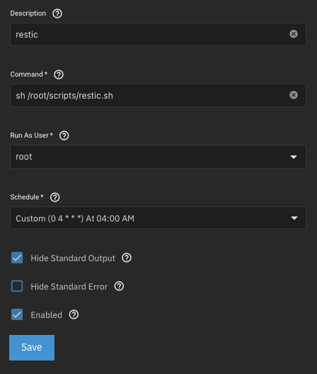

Backups with restic from TrueNAS Scale to Hetzner Storage Box
Table of Contents
Until recently, I didn’t have a proper backup strategy for my NAS. I simply replicated the data to an external hard drive, which was also located in my apartment – essentially the only copy of my data.
Now that I’m using my NAS in a production environment and primarily store important data there, I need a reliable method to back up this data securely to the cloud and restore it in case of a failure.
For this, I chose restic.
#
Why restic?
- Security: Backups are encrypted by default
- Efficiency: Deduplication saves storage space and bandwidth
- Simplicity: Easy to use via the command line
- Automation: Simple integration into scripts or cron jobs
- Flexibility: Supports multiple transfer protocols (SFTP, REST, Rsync)
#
Installing restic on TrueNAS Scale
Since TrueNAS Scale is a closed system, restic cannot be installed via a package manager. Instead, I download the latest version directly from GitHub.
##
Installation commands
cd /root/
wget https://github.com/restic/restic/releases/download/v0.17.3/restic_0.17.3_linux_amd64.bz2
7z x ./restic_0.17.3_linux_amd64.bz2; rm ./restic_0.17.3_linux_amd64.bz2
mv ./restic_0.17.3_linux_amd64 ./restic
chmod +x ./restic
/root/restic self-update
Now, restic can be executed with the command /root/restic.
#
Setting up access to the Hetzner Storage Box
For restic to store backups via SFTP on the Hetzner Storage Box, SSH access must be configured.
- In Hetzner Robot, select the Storage Box and enable SSH support.
- Generate a key pair using
ssh-keygen. - Transfer the public key to the Storage Box:
cat ~/.ssh/id_rsa.pub | ssh -p23 u000000@u000000.your-storagebox.de install-ssh-key
(Replace u000000 with your actual Storage Box username.)
#
Creating a repository
Use the following command to create a new backup repository on the Storage Box:
/root/restic -r sftp:u000000@u000000.your-storagebox.de:/restic/reponame init
You now have an empty backup repository where backups can be stored.
#
Automating backups
To run backups regularly, I created a shell script at /root/scripts/restic.sh:
#!/bin/bash
# restic backup
/root/restic -r sftp:u000000@u000000.your-storagebox.de:/restic/share --password-file "/root/scripts/restic-pass" --tag auto backup /mnt/storage/share;
# restic forget (remove old snapshots based on retention policy)
/root/restic -r sftp:u000000@u000000.your-storagebox.de:/restic/share --password-file "/root/scripts/restic-pass" forget --prune --keep-tag keep --keep-daily 7 --keep-weekly 4 --keep-monthly 6 --keep-yearly 5;
# clean up cache
/root/restic cache --cleanup;
##
Script explanation
- Run backup: The data in
/mnt/storage/shareis backed up to the repository on the Storage Box. - Manage old snapshots:
- Daily snapshots: Keep 7 days
- Weekly snapshots: Keep 4 weeks
- Monthly snapshots: Keep 6 months
- Yearly snapshots: Keep 5 years
- Clean up cache to free up disk space.
The file /root/scripts/restic-pass contains the repository password and is required for the script to run automatically.
##
Cron job for automatic backups
To ensure the backup script runs regularly, a cron job is set up. This is done through the TrueNAS Web GUI:
- Navigate to System > Advanced Settings > Cron Jobs
- Add a new cron job with the following command:
/bin/bash /root/scripts/restic.sh
- Schedule: Run daily at 04:00 AM
- Enable email notifications to be informed of any errors.
